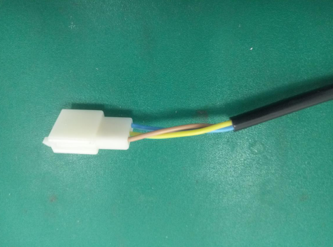
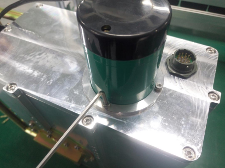
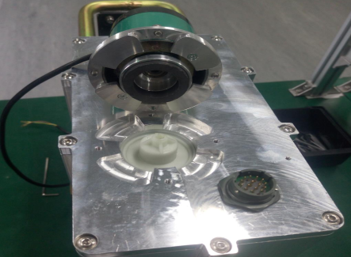
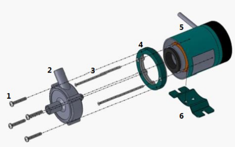
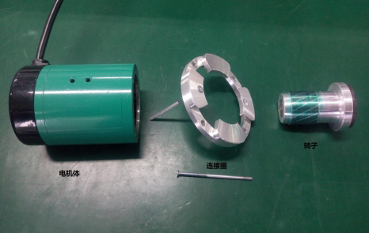
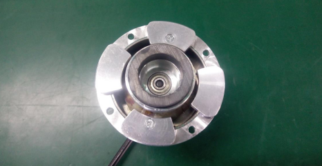

一、故障确认
整机出现故障报警状态为“射源温度异常”；
出现上述故障报警时先确定整机“急停按钮”是否被按下，若没有请立即关闭射源，打开设备电气箱并观察以下几点：
1、空调制冷是否正常
2、油箱外壳温度是否发烫
3、油箱上方散热风扇是否转动
若现场情况出现以上几点描述即可确定为设备故障
二、器件及工具准备：
1、磁力驱动循环泵1台：品号29993156
2、3芯中继接头1只：品号33020008
3、工具：内六角扳手一套，十字头螺丝刀
三、更换前准备工作：
1、将3芯中继接头焊接到泵的输入电源上（此步骤建议在公司内邮寄出去之前完成），如下图：

2、取出泵内转子，将吸附在磁芯上的磁性粉末清理干净。
四、更换步骤
1、确认射源冷却到常温后，拆下射源油箱
2、将油箱侧立起来，油泵朝向正上方，用内六角扳手拆下固定油泵的4只M4×10内六角圆柱头螺钉并放置好

3、将油泵的泵体部分轻轻拔出，并用无尘布快速清理油箱侧板上的油渍、杂物。

4、用十字头螺丝刀拆除两个M3×65螺钉（图中1、2），将旧泵上的连接圈拆下并清理干净放置好。

5、把准备好的新泵进行拆卸并去掉1、2、3、4和6等部分

1、泵体螺丝 2、泵体 3、电机螺钉 4、电机盖 5、电机体 6、电机座
6、把新油泵的电机体、转子和旧泵的连接圈装配好然后整体装进射源侧板。

下图是装配好的油泵俯视图

7、使用第二个步骤拆下来的4只M4×10内六角圆柱头螺钉安装并紧密固定油泵，安装完成后进一步清理油箱表面的油渍、杂物。
注意事项：
1、一定要在油箱冷却时方可进行拆装；
2、拔出旧泵到新泵安装好的过程中，注意不能有任何异物掉进油泵和油箱内，若不慎掉入异物，需要及时将其拿出，严重时返厂进行维修；
3、新泵的泵体部分处于油箱内部，无法拆除更换，所以此部分不需要更换；
4、一定要确认旧泵上的连接圈紧密固定至新泵上，否则会降低油泵的工作性能，甚至导致油泵无法正常工作；
5、在装配过程中对油泵各部分器件分类放置好，避免错装漏装。
五、更换后检测
1、检测油泵的四只M4*10螺钉是否紧密固定；
2、进一步确认油泵的电源线是否接线正确；
3、按照正常选料模式开机运行，观察至少3小时后若无故障出现，问题解决。
更换过程中如有疑问可联系张锋18326062638.